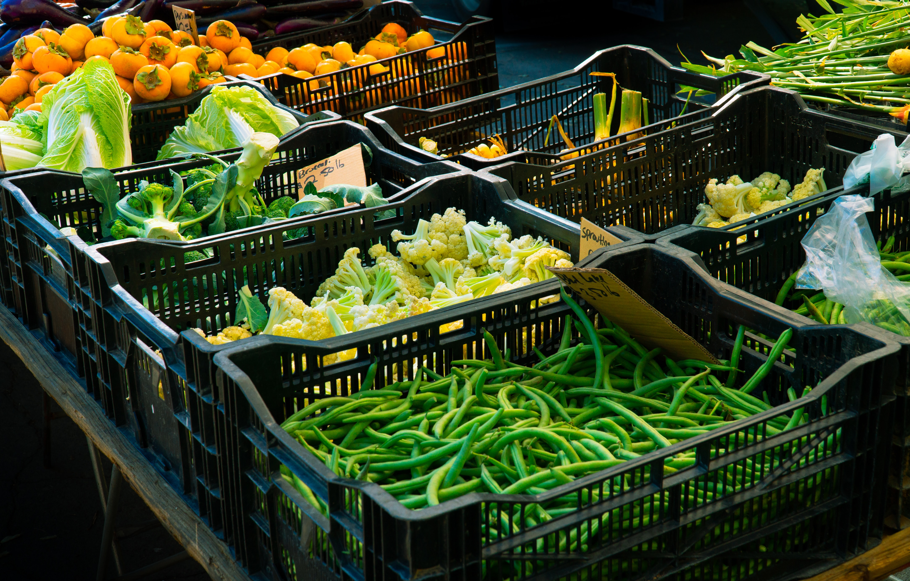

About Karlova
Karlova is a charming neighborhood in Tartu, Estonia, known for its historic wooden houses and winding streets. With its vibrant community feel and cultural events, it's a great place to visit for tourists and locals alike.
Discover MoreUpcoming Events
-
Summer Festival
Join us for our annual Summer Festival on July 15th. Enjoy live music, food, and drinks in the heart of Karlova.
Learn More
-
Street Market
Shop local vendors and artisans at our monthly street market, held on the first Sunday of every month.
Learn More 
Places to Visit
-
Karlova Park
Enjoy a scenic hike up Karlova Park for stunning views of Karlova and Tartu.
-
Barlova
Stop by Barlova for delicious coffee, pastries, and sandwiches.